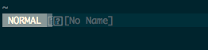
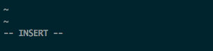
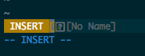
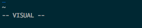
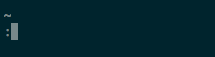
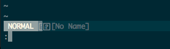

Vim-Basics
VIM Modes
Cuahuctemoc Osorio (Temo)
github.com/cclulu
Vim is a text editor
A powerful and configurable one
How to exit
:q!
Onto to the real topic
There are 4 basic modes
Normal
Insert
 Visual

Command Line
 Normal mode
Lets you move your cursor
go into any of the other modes
and any other cool commands that you learn when using vim
How do you go into normal mode?
Just open vim... or press ESC
Basic Movements
←h ↓j ↑k →l
you could also use arrows.... sometimesFun fact: adm-3a

Visual mode
What is this one?
How do you go into visual mode?
v or V or CTRL-v
whats the difference?
v
Lower case 'v' will start highlighting from where you are and to where you move your cursor
This one is similar to what everyone is used to when using the mouse to highlight/select text
but just moving with the keyboard instead of the mouse
V
Upper case 'V' will highlight/select the whole line where you are
CTRL-v
CTRL-v will highlight/select in a block
Using normal mode commands you can move the cursor to highlight/select text
Command line mode
What can this one do?
Lets you search and replace, run bash commands and Ex commands
How do you go into Command line mode?
:
/ ?
There is a MAJOR difference between the 2 sets
/ ?
This one lets you search using REGEX
it will register every instance of your search
and you can go back and forth with n (forward) and N (backward)
/.*_test
?.*_test
:
This will let you search and replace
run bash commands
save what you are working on
quit vim
add line numbers
turn on syntax highlighting
basically modify what you are looking at in the vim window
Search and Replace
:%s/foo/bar/g
:s/foo/bar/g
:%s/foo/bar/gc
:%s/foo/bar/gi
Run bash commands
:! ls -la
Save and quit
:wq
:q!
:q
:x
modify what your vim looks like
syntax enable
syntax on
set clipboard=unnamed
set hls " search with highlights by default
set hlsearch
set ignorecase
set noswapfile
set nowrap " don't wrap lines
set number
set scrolloff=5 " adds top/bottom buffer between cursor and window
set smartindent " enable smart indentation
set undofile
set undodir=~/.vim/undodir
You are probably wondering "How do I actually start editting Text?"
With Insert Mode
Insert mode
What does it do?
Getting into Insert Mode
i I a A o O C cw cc ce s S
So those are a lot of different ways
only worry about:
i
you can move arround with the arrows keysYou can only get into these mode through normal mode
you just press ESC to get back into normal mode from any of these other modes
Thats it ... for now